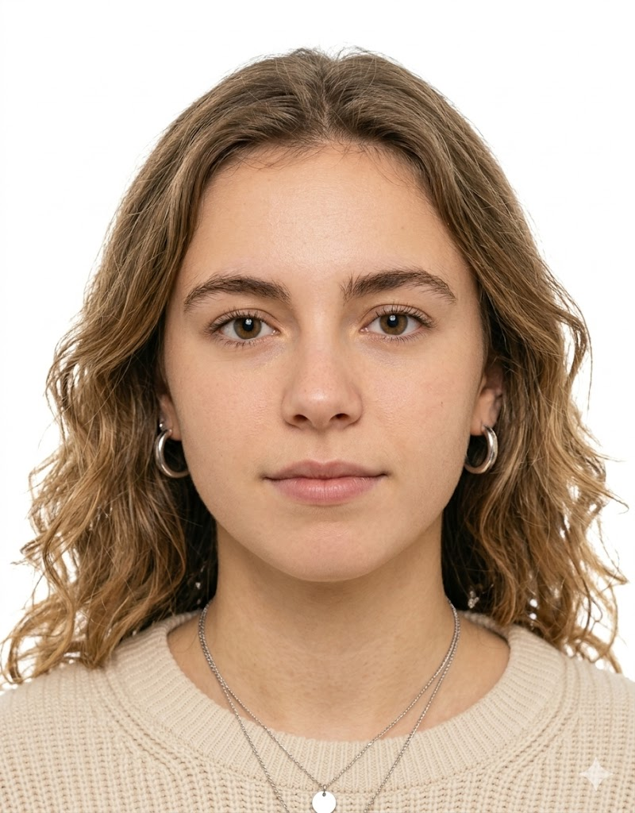
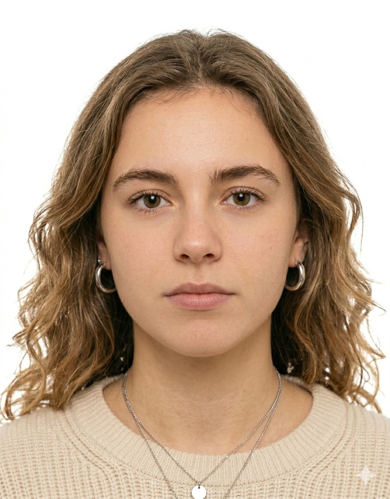

Промтзилла
Как сделать фотографию на паспорт через ИИ
Готовые промты для создания документальных фото по вашей фотографии. Внутренний паспорт РФ и загранпаспорт (ИКАО).
Как использовать на Study AI
📋 Пошаговая инструкция
- 1Перейди на study24.ai и открой инструмент Nano Banana PRO
- 2Нажми на иконку скрепки и загрузи своё фото — подойдёт любое чёткое фото анфас
- 3Скопируй промт ниже и вставь в поле ввода
- 4Нажми отправить и подожди 10–20 секунд — нейросеть обработает фото
- 5Если фон не белый — добавь к промту: «фон строго белый #FFFFFF»
- 6Скачай результат и распечатай в формате 35×45 мм
Универсальные промты
RU
На входе — фотография человека. Преврати её в фото на внутренний паспорт РФ (формат 35×45 мм). Требования: — Фон заменить на чисто белый (#FFFFFF), без теней и градиентов — Лицо, кожу, волосы и внешность человека не изменять вообще — Лицо по центру кадра, занимает 70–80% высоты — Плечи видны — Равномерное мягкое студийное освещение, тени на лице и фоне убрать — Без очков, без головного убора — Выражение лица, возраст и внешность — только как в оригинале

ДоИсходное фото

ПослеПаспортное фото
EN
Input is a real photo of a person. Convert it to a Russian internal passport photo, 35x45mm format. Rules: — Replace the background with pure white (#FFFFFF), no shadows, no gradients — Keep the person's face 100% unchanged: skin tone, hair, features, expression — Crop so the face is centered and occupies 70–80% of the frame — Shoulders must be visible — Apply soft, even frontal studio lighting, eliminate all shadows — No glasses, no headwear — Do not alter age or appearance in any way
Под конкретные инструменты
Edit mode · загрузи фото
RU
Отредактируй загруженное фото: замени фон на чисто белый, убери все тени с фона и лица. Лицо, волосы, кожу и внешность человека не изменяй — оставь в точности как в оригинале. Обрежь до формата фото на документ: лицо по центру, занимает 70–80% кадра, видны плечи. Мягкое равномерное освещение. Формат 35×45 мм, внутренний паспорт РФ.
EN
Edit the uploaded photo: replace background with pure white, remove all shadows. Keep the person's face, hair, and skin exactly as in the original — do not change appearance. Crop to passport format: face centered, occupying 70–80% of frame, shoulders visible. Soft even studio lighting. 35x45mm, Russian internal passport standard.
Nano Banana PRO
Study AI · загрузи фото
RU
Загружаю своё фото. Сделай из него фото на внутренний паспорт РФ 35×45 мм. Белый фон без теней. Внешность не менять. Лицо по центру, плечи видны. Равномерный свет. Без очков и головного убора.
EN
I'm uploading my photo. Convert it to a Russian internal passport photo, 35x45mm. White background, no shadows. Do not change my appearance. Face centered, shoulders visible. Even lighting. No glasses or headwear.
Универсальные промты
RU
На входе — фотография человека. Преврати её в биометрическое фото на загранпаспорт РФ по стандарту ИКАО (35×45 мм). Требования: — Фон — чисто белый, без теней, бликов и переходов — Внешность человека не менять: лицо, кожа, волосы — строго как в оригинале — Высота лица от подбородка до макушки — 32–36 мм в кадре — Голова прямо, взгляд в объектив, глаза открыты — Нейтральное выражение, рот закрыт, без улыбки — Очки убрать, если есть — Диффузное равномерное освещение по всему лицу, никаких теней
ДоИсходное фото

ПослеПаспортное фото
EN
Input is a real photo of a person. Convert to Russian biometric international passport photo, ICAO standard, 35x45mm. Rules: — Pure white background, no shadows or gradients — Face completely unchanged — same person, same features, same skin — Face height from chin to crown: 32–36mm within the 45mm frame — Head strictly straight, eyes open, looking at camera — Neutral expression only, mouth closed, no smile — Remove glasses if present — Uniform diffused lighting across the entire face, no shadows or highlights
Под конкретные инструменты
GPT Image 2
Edit mode · загрузи фото
RU
Отредактируй фото под биометрический загранпаспорт РФ, стандарт ИКАО, 35×45 мм. Замени фон на чисто белый без теней. Лицо и внешность не изменяй. Высота лица в кадре 32–36 мм. Голова прямо, взгляд в камеру, рот закрыт, без улыбки. Убери очки если есть. Равномерное диффузное освещение без теней на лице.
EN
Edit this photo for a Russian biometric international passport, ICAO standard, 35x45mm. Replace background with pure white, no shadows. Do not change face or appearance. Face height 32–36mm in frame. Head straight, eyes open, mouth closed, no smile. Remove glasses if present. Uniform diffused lighting, no shadows on face.
Nano Banana PRO
Study AI · загрузи фото
RU
Загружаю своё фото. Сделай биометрическое фото на загранпаспорт РФ, стандарт ИКАО, 35×45 мм. Белый фон без теней. Внешность не менять. Лицо 32–36 мм высотой, голова прямо, взгляд в камеру, рот закрыт. Очки убрать. Равномерный свет без теней.
EN
I'm uploading my photo. Make a biometric international passport photo, ICAO standard, 35x45mm. White background, no shadows. Don't change my appearance. Face height 32–36mm, head straight, eyes open, mouth closed. Remove glasses. Even diffused lighting.
Теги
Эту страницу можно использовать онлайн: промпт подходит для работы с ИИ и нейросетью.